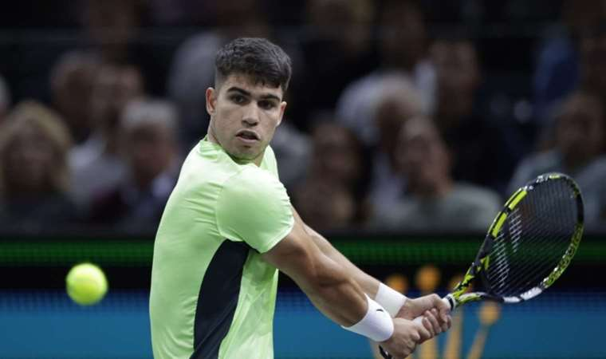
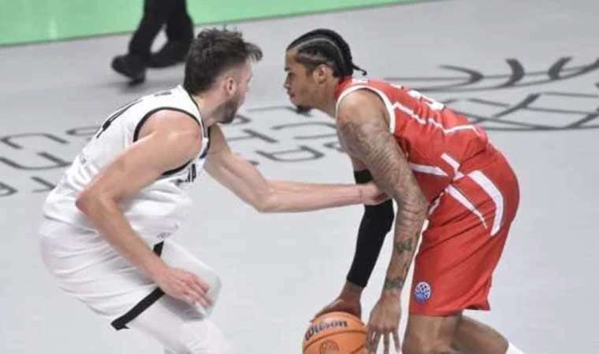
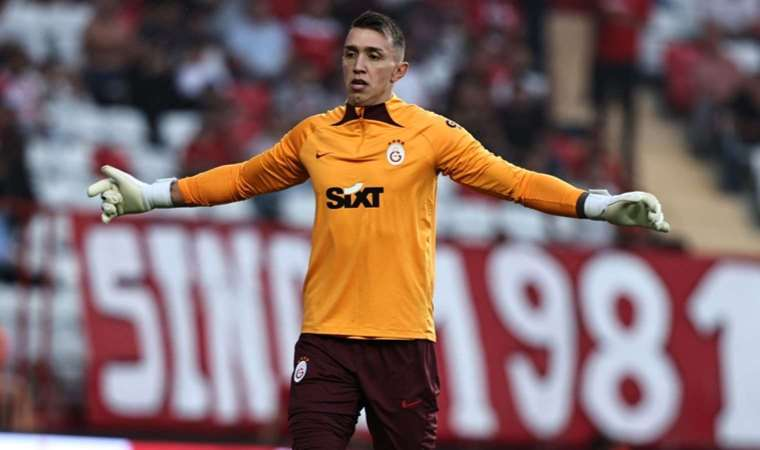

SPOR HABERLERİ
Günün Spor Fotoğrafları


GÜNÜN SPOR HABERLERİ
“Filenin Sultanları, Cumhuriyetin 100. Yılında Avrupa Şampiyonu!”
A Milli Kadın Voleybol Takımımız, 2023 CEV Avrupa Şampiyonası finalinde Sırbistan’ı 3-2 yenerek Cumhuriyetimizin 100. yılında Avrupa şampiyon oldu.
Dünya 1 numarası olan Filenin Sultanları, Türk spor tarihinde takım sporlarında Avrupa şampiyonu olan ilk takım olarak tarihe geçti.
Belçika’nın başkenti Brüksel’de oynanan mücadeleyi Gençlik ve Spor Bakanı Dr. Osman Aşkın Bak, Eski Dışişleri Bakanı ve Antalya Milletvekili Mevlüt Çavuşoğlu, Eski Gençlik ve Spor Bakanı, İzmir Milletvekili Mehmet Kasapoğlu, Türkiye Cumhuriyeti Gençlik ve Spor Bakanı Yardımcısı Hamza Yerlikaya, Konya Milletvekili Mehmet Baykan, Türkiye Cumhuriyeti Brüksel Büyükelçisi Bekir Uysal, Türkiye Cumhuriyeti Brüksel Başkonsolosu Umut Deniz, TVF Başkanı Mehmet Akif Üstündağ, TVF Asbaşkanı Selahattin Süleymanoğlu, Milli Takımlardan Sorumlu Yönetim Kurulu Üyesi Bahar Mert, Sağlık İşlerinden Sorumlu Yönetim Kurulu Üyesi A.Nihan Karaçam Salkaya, Organizasyon ve Pazarlama Kurulundan Sorumlu Yönetim Kurulu Üyesi Kazım Şahin Gürkan, İcra Kurulu ve Yönetim Kurulu Üyesi Suat Baylan, Yönetim Kurulu Üyesi Metin Mengüç, Yönetim Kurulu Üyesi Ersin Yılmaz, Yönetim Kurulu Üyesi Bülend Atalar, Yönetim Kurulu Üyesi Ali Osman Özdemir de izledi.
Belçika’da yaşayan ve çevre ülkelerden gelen vatandaşlarımızda millilerimize büyük destek verdi.
Karşılaşmanın istatistikleri içintıklayınız
Çapraz bağı yırtılmıştı: Brezilyalı yıldız Neymar'dan kötü haber!
Suudi Arabistan ekiplerinden Al Hilal'de oynayan Neymar'ın, sakatlığı nedeniyle uzun bir süre forma giyemeyeceği iddia edildi.Brezilya basınından Globo'nun haberine göre, 31 yaşındaki futbolcunun sakatlığı nedeniyle perşembe günü ameliyat olacağı kaydedildi.Brezilya Milli Takımı doktoru Rodrigo Lasmar tarafından ameliyat edilmek istediği ve bu nedenle Brezilya'da bıçak altına yatacağı ifade edildi.Neymar'ın ameliyatının ardından yaklaşık 10 ay sahalardan uzak kalacağı öne sürüldü.Brezilya'nın 17 Ekim'de Uruguay ile oynadığı maçta Neymar'ın sol diz ön çapraz bağında ve menisküsünde yırtılma meydana geldiği açıklanmıştı.
NBA'de Cedi Osman'ın ekibi San Antonio Spurs, son anda galibiyete ulaştı!
NBA'de normal sezon heyecanı, bu gece oynanan üç karşılaşmayla devam etti.New York Knicks, Rocket Mortgage FieldHouse'da Cleveland Cavaliers'ı 109-91 mağlup etti.Milli basketbolcu Cedi Osman ise 9 sayı, 1 asist ve 2 ribaunt ile karşılaşmayı tamamladı.Suns cephesinde Kevin Durant 26 sayı, 2 ribaund, 7 asist ve 2 top çalmayla takımının en skorer ismiydi. Eric Gordon 20 sayı, 2 ribaund ve 6 asistle oynarken, Grayson Allen ise 19 sayı, 7 ribaund, 3 asist ve 1 blokla maçı tamamladı.

Carlos Alcaraz'dan Paris Masters'a erken veda!
İspanyol tenisçi Carlos Alcaraz, ATP Paris Masters turnuvası 2. tur karşılaşmasında Rus raket Roman Safiullin'e setlerde 2-0 mağlup olarak organizasyona veda etti.Profesyonel Tenisçiler Birliği (ATP) tarafından düzenlenen Paris Masters turnuvasında dünya 2 numarası İspanyol Carlos Alcaraz, ikinci turda elendi.ATP 1000 serisi organizasyonunun en önemli favorilerinden Alcaraz, ikinci turdan başladığı organizasyonda, elemelerden gelen Rus Roman Safiullin ile karşılaştı.

TOFAŞ evinde hüsrana uğradı!
FIBA Basketbol Şampiyonlar Ligi H Grubu 2. hafta maçında TOFAŞ, evinde İtalya'nın Bertram Yachts Derthona takımına 88-80 yenildi.Salon: TOFAŞ Hakemler: Boris Krejic, Andris Aunkrogers, Ventsislav Velikov

Galatasaraylı kaleci Fernando Muslera, Sabri Sarıoğlu'nun peşinde!
Süper Lig ekibi Galatasaray'ın Uruguaylı kalecisi Fernando Muslera, 4 maç daha sarı-kırmızılı formayı giymesi halinde kulübün efsanesi Sabri Sarıoğlu'nu yakalayacak.Tecrübeli eldiven, 475 kez sarı-kırmızılı formayı terletti. Kulüp tarihinde en çok forma giyen 5. oyuncu olan Muslera, 4 maç daha oynaması halinde 479 kez görev yapan Sabri Sarıoğlu'nu da yakalamış olacak. Muslera, bu sezon ise 19 maçta kaleyi korudu.